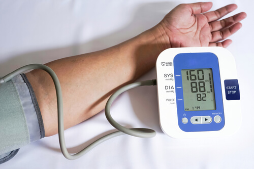
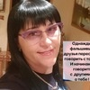

A magas vérnyomás, az elzáródott erek és a szívfájdalom korai halált okoz.
Hogyan lehet ezt elkerülni?
Alíz Szabóné
01.06.2022
Mindenki tudja, hogy a vérnyomás, a stroke és a szívroham az erek koleszterin
általi "eltömődésének" következményei. Kevesen tudják azonban, hogy ez csak a jéghegy csúcsa. Az erek
"elzáródása" 10-ből 9 halálosnak vélt krónikus betegséget okoz.
A magas vérnyomás olyan betegség, amely Magyarországon minden harmadik felnőttet érint,
de a lakosság többsége nincs tisztában a problémával, ezért nem tesz semmit. És sokan azok közül, akik
tisztában vannak a patológiájukkal, helytelenül küzdenek ellene: szabálytalanul vagy egyáltalán nem, túl
kis dózisban szedik a készítményeket stb. Sajnos a vérnyomás hosszú ideje tartó rossz szabályozása káros
hatással lehet a szív- és érrendszerre és a vesékre, és számos egészségügyi és életveszélyes szövődményt
okozhat.
Mit kell tudniuk a magas vérnyomásban szenvedőknek?
Miért az erek teszik ki egészségünk 85%-át?
A koleszterinen kívül mi más tömítheti el az ereket?
4 nyilvánvaló és 7 további rejtett jele a rossz érrendszeri egészségnek
Hogyan tisztíttathatom meg az ereimet biztonságosan otthon?
Ezekre a kérdésekre Kis Áron, az Ér- és Szívgyógyászati Központ vezetője
válaszolt. Jól ismert a szakértői közösségben. Gyakran meghívják őt, mint jelentős érrendszeri
egészségügyi szakértőt, hogy természetes készítményekkel segítsen megszabadulni a magas vérnyomás
problémájától. Azok között, akiknek Kis Áron segített, vannak egyszerű polgárok és hírességek
egyaránt.
Alíz Szabóné: Kis úr, ön mindig azt mondja, hogy az erek
teszik ki a test egészségének 85%-át? Meg tudná magyarázni, hogy miért?
Mi az emberi test legnagyobb szerve? Kevesen tudják. Még a tanítványaim is gyakran
tévednek. Leggyakrabban azt mondják, hogy az agy és a máj. A képzettebbek azt mondják, hogy a bőr.
Valójában a legnagyobb szervünk a keringési rendszerünk. Az erek nem csak csövek, amelyeken keresztül a
vér áramlik. Összetett és egyedülálló szerv, amelynek károsodása elkerülhetetlenül betegséggel végződik.
Rossz vérkeringés a lábakban - visszérbetegség, tartós
duzzanat és nehézkesség a lábakban, elviselhetetlen hideg vagy égő érzés. Repedt sarkak. A rossz
vérkeringés nem jelent védelmet a baktériumok és így a gombák ellen. A körmök vastagok és hosszúak
lesznek.
A májat tápláló erek elzáródása - hepatitis. Keserű íz a
szájban. Keserűség a szájban zsíros ételek fogyasztása után.
Az ízületekben lévő erek gyengülnek és eltömődnek -
a porc kiszárad. Az ízületek nyikorognak és fájnak, csontritkulás alakul ki, és sérvek
jelennek meg.
A végbélnyílásban lévő erek elgyengülnek – lila
aranyércsomók jelennek meg.
Problémák a szem ereiben – a látás romlik, homályossá válik,
repülő "legyek" jelennek meg. Szürkehályog alakul ki. A szemvörösség, amelyet gyakran a fáradtsággal
társítunk, valójában mikrovérzés - a szem apró hajszálereinek pusztulása.
És természetesen az érrendszeri betegségek királynője őfelsége, a Magas
Vérnyomás. A magas vérnyomás pedig a stroke anyja és a szívroham testvére.
Az "ép testben ép lélek" mondást kiegészíthetnénk azzal, hogy "ép erekkel ép
test".
"Eltömődött" erek - az összes szerv éhezését jelenti.
A túlsúly például szorosan összefügg az erekkel. A koleszterinben
gazdag ételek kiéheztetik a szerveket, és az erek nem tudják ellátni őket elegendő tápanyaggal. Az agy
tehát jeleket küld az evésre. És az ember eszik. Az elzáródott erek miatt azonban a szerveink nem jutnak
megfelelő mennyiségű tápanyaghoz. Ezután az agy jelzést küld nekünk, hogy együnk. És a folyamat újra és
újra megismétlődik.
Ezért akarunk állandóan enni valamit, ezért vágyunk az édességre és a zsírra - a
szervezetnek kalóriákra van szüksége.
Amikor a kollégák azt mondják az embereknek: "Azért magas a vérnyomása, mert
túlsúlyos", félreértik az ok-okozati összefüggést. A magas vérnyomás túlsúlyt okoz. Nem a túlsúly okozza
a magas vérnyomást.
Ezért nem fáradok bele az ismétlésbe: ha teljes életet akar élni, tisztítsa meg és
állítsa helyre az ereit. A tiszta erek a kulcsa annak, hogy megszabaduljunk a krónikus
betegségek 90%-ától, amelyek közül néhányat "gyógyíthatatlannak" tartanak.
"Ha egy ér normál lumenje olyan vastag, mint egy ujj, akkor 5 kg
koleszterinlepedék négy gyufa méretűre csökkenti a lument."
Alíz Szabóné: Mindenki tudja, hogy a koleszterin
rossz. Ez az, ami eltömíti az ereinket, korlátozza a véráramlást és rontja a keringést. De vajon ez
az egyedüli bűnös?
Igen, így van. Az érelzáródások mintegy 60-70%-áért a koleszterines plakkok, más néven
"ateroszklerotikus plakkok" felelősek.
50 éves korig akár 5 kg koleszterin plakk is felhalmozódhat a szervezet ereiben. A
koleszterinlerakódások 4-5-szörösére korlátozzák a véráramlást az erekben.

50 éves korban az erekben felhalmozódott lerakódás össztömege 5 kg
KOLESZTERIN
TROMBOTIKUS TÖMEG
KALCIFIKÁCIÓ
A koleszterinplakkok nem életveszélyesek. Igen, csökkentik az életminőséget,
magas vérnyomást, fejfájást és ízületi fájdalmat, gyengeséget és apátiát okoznak. A vérrögök
azonban, amelyek szintén az erekben halmozódnak fel, sokkal veszélyesebbek.
A vérrögök kevésbé halmozódnak fel, "csak" körülbelül 800 g-1000 g. A veszély
azonban az instabilitásukban rejlik. A vérrög bármikor leszakadhat és elmozdulhat.
Ha a vérrög elég nagy, akkor "elzárja" az eret. Ez iszkémiához vezet - az ér által
táplált szerv vérellátásának teljes elvesztéséhez.
Az iszkémiás stroke az agyi erek elzáródása. A szívroham egy szívartéria elzáródása.
Májelégtelenség, pneumothorax, veseelégtelenség. Az aranyér valójában a végbélnyílás ereinek
iszkémiája. A lábakban lévő apró erek elzáródása végül nekrózishoz - üszkösödéshez - vezet.
A vaszkuláris kalcinózist a vegyi anyagok és élelmiszer-adalékanyagok
maradványai okozzák. Körülbelül 300-400 gramm halmozódik fel 50 éves korra. A meszesedés
leggyakrabban az agyi erekben fordul elő.
A meszesedés kristályos és éles szerkezete miatt veszélyes. Ha egy ér jelentősen
beszűkül, stressz, testmozgás vagy időjárásváltozás miatt görcsbe rándul, az éles meszes
kristályok átfúrják az eret, és szakadást okoznak. Az agyban megrepedt erek pedig vérzéses
stroke-hoz vezetnek.
KOLESZTERIN
A koleszterinplakkok nem életveszélyesek. Igen, csökkentik az életminőséget,
magas vérnyomást, fejfájást és ízületi fájdalmat, gyengeséget és apátiát okoznak. A vérrögök
azonban, amelyek szintén az erekben halmozódnak fel, sokkal veszélyesebbek.
TROMBOTIKUS TÖMEG
A vérrögök kevésbé halmozódnak fel, "csak" körülbelül 800 g-1000 g. A veszély
azonban az instabilitásukban rejlik. A vérrög bármikor leszakadhat és elmozdulhat.
Ha a vérrög elég nagy, akkor "elzárja" az eret. Ez iszkémiához vezet - az ér által
táplált szerv vérellátásának teljes elvesztéséhez.
Az iszkémiás stroke az agyi erek elzáródása. A szívroham egy szívartéria elzáródása.
Májelégtelenség, pneumothorax, veseelégtelenség. Az aranyér valójában a végbélnyílás ereinek
iszkémiája. A lábakban lévő apró erek elzáródása végül nekrózishoz - üszkösödéshez - vezet.
KALCIFIKÁCIÓ
A vaszkuláris kalcinózist a vegyi anyagok és élelmiszer-adalékanyagok
maradványai okozzák. Körülbelül 300-400 gramm halmozódik fel 50 éves korra. A meszesedés
leggyakrabban az agyi erekben fordul elő.
A meszesedés kristályos és éles szerkezete miatt veszélyes. Ha egy ér jelentősen
beszűkül, stressz, testmozgás vagy időjárásváltozás miatt görcsbe rándul, az éles meszes
kristályok átfúrják az eret, és szakadást okoznak. Az agyban megrepedt erek pedig vérzéses
stroke-hoz vezetnek.
4 nyilvánvaló jel és 7 rejtett jel, amelyek érbetegségre
utalnak
Ha Ön 45 évesnél idősebb, és még soha nem szedett semmit az érrendszer tisztítására,
garantálom, hogy problémája van.
Koleszterinnel eltömődött erek, vérrögök, meszesedés - ezek természetes
öregedési folyamatok. Természetesen manapság az élelmiszerek, a gyógyszertári készítmények,
a dohányzás és az alkohol 5-8-szorosára gyorsítják az "eltömődés" folyamatát. De mindannyian emberek
vagyunk, és felesleges eltitkolni, hogy ilyen világban élünk.
Ha magas vérnyomást diagnosztizáltak önnél, akkor nem is kell meghallgatnia. A
magas vérnyomás a rossz erek királynője.
Ön vérnyomás-ingadozástól szenved? Állandóan magas, és tablettákat kell szednie? Így az
ér a legjobb esetben is megtartotta lumenének 30%-át. A többit sűrűn bélelik koleszterinplakkok,
vérrögök, meszesedés.
Ezért van az, hogy a legkisebb stressz, az időjárás-változás és a mágneses viharok
azonnal befolyásolják a közérzetet. A vérnyomás emelkedik, zúgást hall a fejében, az ízületei
nyikorognak.
4 rendellenesség, melyeket az erek elzáródása okoz:
1. Magas vérnyomás
Instabil vagy magas vérnyomás, amelyet különböző
készítményekkel kell csökkenteni. Ez a fő és legfontosabb mutató. Diagnosztizáltak Önnél magas
vérnyomást? Tehát az erei azt mondják: "Tisztításra van szükségünk!”
2. Visszértágulat
Szörnyű kiálló erek a lábakon, nehézkesség és
fájdalom, duzzanat. A koleszterin és a vérrögök "eltömítik" a vénákat, fokozatosan pókhálós
vénákat képezve, amelyek végül telangiektáziává, a telangiektázia pedig visszérré
alakul.
3. Aranyér
Amikor a végbélnyílásban lévő erek elzáródnak, az
aranyércsomók megduzzadnak. Ha először a vérellátó erek elzáródnak, anális repedés
keletkezik.
4. Osteochondrosis
Ez a porc vérkeringésének károsodását jelenti. A
porc kiszárad és kopni kezd, nincs ideje regenerálódni. Nem regenerálódik és száraz lesz.
Elveszíti a fenntartási képességét. A sók nem távoznak, és kezdenek ellenőrizetlenül
felhalmozódni, púpot képezve.
7 figyelmeztető jel:
1. Ödéma
Az eltömődött ereknek nincs idejük a folyadékok kiürítésére.
Megzavarják az elektrolit-egyensúlyt. A lábak esténként megduzzadnak, és a szűk zoknik nyomot
hagynak a bokán. Puffadt arc és szem alatti táskák. Az ujjakon lévő gyűrűket lehetetlen
eltávolítani. A duzzadt has a belső szervek duzzanatát jelzi.
2. Fülzúgás
A halk zörejtől a hangos csengés vagy zümmögő hangig, amely
zavarja a koncentrációt. Ezek a dobhártyát összenyomó agyi erek megnövekedett nyomásának
hatásai.
3. Szédülés
A részegség érzése, a hirtelen fellépő szédülés azt jelzi,
hogy az erek "éheznek". A hallás is gyakran érintett.
4. Álmatlanság
Álmosnak érzi magát, és éjfél után nem tud elaludni?
Ennek oka az agyalapi mirigy vérellátásának hiánya. Leáll a melatonin, az alváshormon
termelése.
5. Fáradtság
Nincs ereje. Nem akar semmit sem csinálni. Csak feküdni és
enni. Ez az érzés abból ered, hogy a test energiatakarékos üzemmódba kapcsol. A szervek nem
jutnak elegendő tápanyaghoz a szennyezett ereken keresztül, és a szervezet megpróbálja
csökkenteni az aktivitást, hogy ne haljon meg.
6. Látásproblémák
Repülő "legyek", homályos látás. Ezek a szem
érelégtelenségének jelei.
7. Ízületi fájdalom
Az időjárás változásai fájdalmat és nyikorgást
okoznak az ízületekben. Amikor reggel felébred, nem érzi magát ébernek és kipihentnek, hanem
inkább zsibbadtnak és szinte bénának. Az ízületi merevség alvás után csak idővel szűnik meg. A
szinoviális folyadék elveszíti tulajdonságait, és az ízületeket tésztaként ragasztja össze.
Gyakran előfordul, hogy az embernél egynél több jel van jelen, különböző kombinációkban egyszerre. Ön
tapasztalt legalább egy jelet? Az erek kétségbeesetten riadót fújnak, tisztításra és
táplálásra szorulnak.
A betegek megpróbálnak minden egyes patológiával külön-külön felvenni a harcot. Tabletták magas
vérnyomás ellen, kenőcsök visszerekre, kúpok aranyérre, gélek osteochondrosisra ellen. És persze
rengeteg fájdalomcsillapító.
Pocsékolják a pénzt, hogy táplálják a gyógyszeripart. Mert minden patológia oka ugyanaz - keringési
zavarok. És az általános érrendszeri tisztítással kell kezdeni.
"A legtöbb gyógyszertári készítmény nem segít, hanem gyengít és károsít"
Alíz Szabóné:Kis úr, mi a leghatékonyabb módszer
a koleszterin, a vérrögök és a meszesedés eltávolítására az erekből?
A biztonságos érrendszeri tisztításhoz egy kifogástalan hírnévvel rendelkező
terméket ajánlok - a . 12-17 évvel meghosszabbítja az életet,
energiával és
pihenéssel tölti meg, mintsem nyomorúsággal és a vitalitás csökkenésével.
Ugyanolyan biztonságos, mint a gyógytea. Hatékonyságát tekintve pedig
a második helyen áll a sebészi értisztítás - a sztentelés - után. A műtéttel ellentétben azonban
nincsenek komplikációk vagy mellékhatások. Egyetlen kúra megtisztítja az összes eret a szervezetben. A
nagy és vastag artériáktól a kisebb és vékonyabb hajszálerekig.
A egy 100%-ban természetes, növényi kivonatokon alapuló termék, amely vízzel
érintkezve felébreszti az élő molekulákat. Ezek a kis "tisztítószerek" eltávolítják az erekből a
koleszterinnyálkát, a falakra tapadt vérrögöket, a kalcinátokat - a gyógyszertári készítmények
maradványait. Bármi, ami megakadályozza a normális véráramlást. 1,5-2 hónapos rendszeres használat után
a eltávolítja az évek során felhalmozódott káros maradványokat, amelyek
mérgezik az
életét.
A fejfájás elmúlik, és vele együtt a fülzúgás is. Az agy, amely elegendő tápanyagot kap
a tiszta ereken keresztül, egy szuperszámítógép sebességével kezd el dolgozni. A gondolatok világosak és
pontosak.
A hallása javul, olyan kellemes hangokat hall, amelyeket korábban nem
vett észre és akár egy csendes beszélgetést is meghallhat a szomszéd szobában.
Az ízek intenzívebbé válnak. Az orrdugulás, a krónikus orrfolyás és az
allergia megszűnik. A hörgők helyreállnak. A légzés szabad és szabályos. A friss levegő kitölti a tüdőt,
kellemes hullámokban terül szét a testben, és enyhe eufória érzetét kelti.
Az ízek intenzívek és testesek. A hétköznapi ételek rendkívüli módon
kielégítőek. Egyen kevesebbet és kapjon többet. Megszűnik az állandó édesség- és szénhidrát utáni
vágy.
Az ízületek köszönetet mondanak, és nem fájnak tovább. Az ízületek
ropogása teljesen megszűnik, a mozgás simává válnak, köszönhetően az ízületek helyreállító
hidratáltságának. Ez olyan, mintha olajat cserélne a motorjában, a fémreszeléket tartalmazó piszkos,
fekete folyadékot friss, tiszta olajra cserélné a tökéletes tapadás érdekében.
Alíz Szabóné:Ez lenyűgöző. Valójában ez az első
alkalom, hogy hallottam a ről. Bár hallottam már hasonló készítményekről általában. Japánban
és Izraelben hivatalosan is elismert, mint a különböző betegségek terápiájának előnyben részesített
módszere. De itt az emberek még mindig nem bíznak ezekben a termékekben. Miért?
Hadd mondjak egy elrettentő példát a bizalmatlanságról. 1928-ban
fedezték fel az első antibiotikumot, a penicillint. Könnyen felszámolta a vérhas és a
tífusz betegségeket, amelyekbe az emberek elkerülhetetlenül belehaltak.
A legtöbben azonban nem hittek abban, hogy ez segíthet, mivel már 1000-szer csalódtak a
gyógyulás érdekében tett kísérleteikben. Azok, akik már 1000-szer csalódtak, és nem féltek megpróbálni
az 1001. alkalommal, talpra álltak. És akik feladták, vállat vontak, és azt mondták: "Egy újabb
csodaszer, ami nem működik", elhunytak, pedig a megoldás már közel volt.
Ahogyan a penicillin egykor legyőzte a korabeli betegségeket: vérhas, tífusz és
tüdőpestis. Idővel a segít megszüntetni az érrendszeri
patológiákat. Az első
lépések már megtörténtek - Japán, Kanada, Dél-Korea és Izrael számos lépést tett az érrendszeri
tisztítás e módszerének népszerűsítésére.
"A kétségeink árulók, sok lehetőséget hagyunk ki miattuk, mert félünk a
próbálkozástól."
Hazánkban a gyógyszerészek nem sietnek a eladásával. Ezzel pedig honfitársaink
tízezreinek okozhatnak helyrehozhatatlan károkat!
A két hónapos szedése egyenlő az újjászületéssel.
Alíz Szabóné:Hiszek abban is, hogy a kétség a
legnagyobb ellenségünk, ezért nem félek kipróbálni valami újat. Tegyük fel, hogy veszek egy csomag
t, és elkezdem szedni. Mi történik ezután? Hogyan működik?
Folyadékkal és oxigénnel a jótékony hatású kivonatok hidrogén-oxigenizációs hatást
fejtenek ki.
A molekulák kis oxigénbombák. Felrobbantják a koleszterinlerakódásokat az
erekben, és lehetővé teszik a vér szabad áramlását.
A t "érrendszeri tisztítószerként" emlegetik. Ez nagyon pontosan tükrözi a
lényegét.
Ezért olyan hatékony a : ön élő kivonatokat vesz be, amelyek
aktívan hatnak.
Eközben a gyógyszertári termékek csak passzív és sterilizált vázképleteket adnak.
A összetétele segít a gyors eredmények elérésében. Az oxigénnel dúsított
kivonatok könnyen felszívódnak a nyelőcső falába. Ezért a nem okoz gyomorégést, keserűséget a
szájban, rossz leheletet, nem irritálja a beleket és védi a gyomrot. A fekélyes emberek is biztonságosan
szedhetik a t.
"A a jótékony hatású kivonatok kincsestára, amelyek harmonikusan
tisztítják és erősítik az ereket."
SZABAD “ÁTJÁRÓK”
Olivabogyó falevél kivonat - normalizálja a vér koleszterintartalmát, gátolja az
érelmeszesedés kialakulását. Az anyag molekulái
vésőként vésik le az erek falához tapadt koleszterinmolekulákat. A szabad véráramlás biztosított. A
szervek végre elkezdik megkapni a tápanyagokat. A porc visszatér az életbe, nedvességgel és oxigénnel
telítve, aktiválva az öngyógyító mechanizmust. A rugalmasság helyreáll. Megszűnik a nyak, a hát és az
ízületek ropogása. A térdek és az ujjak nem reagálnak az időjárás változásaira.
A duzzanat elmúlik. A lábak 24 órás állás után sem dagadnak meg. A bőr
vérellátása helyreáll - a pókhálóvénák és a hajszálértágulat eltűnik. A visszerek fokozatosan
zsugorodnak, az aranyér helyreáll.
ÁTALAKÍTÁS ENERGIÁVÁ
Itt jönnek a képbe a Króm molekulái. A koleszterinmolekulák "töredékeit"
fogják be, és azokkal egyesülve a lipidanyagcserében részt vevő, jótékony hatású, nagy sűrűségű
lipoproteinekké alakítják őket.
A két legyet üt egy csapásra: eltávolítja az ereket eltömítő koleszterint, és
serkenti a megfelelő zsírégetést. Ettől energikusnak, mozgékonynak, élettel telinek és "hegyeket
megmozgatónak" érzi magát.
ELMÚLNAK A GÖRCSÖK
A Gymnema sylvestre kivonat segít enyhíteni az érgörcsöket. Ez egyfajta nyugtató az
erek számára. Megnyugtatja és ellazítja a károsodott véráramlás miatt eltömődött ereket. Vérnyomása
fokozatosan és biztonságosan normalizálódik. A fejfájás és a fülzúgás enyhül, a tüdő és a hörgők
normálisan működnek.
SEGÍTSÉG A SZÍVNEK
C vitamin - javítja a vérerek szilárdságát, normalizálja a koleszterin anyagcserét,
pozitívan hat az ideg és endokrin rendszerre. Feloldja a véralvadékot, a vérrögöket és még a kisebb
aneurizmákat is. Megszünteti a vegyi anyagok által az erekben hagyott
kalciumlerakódásokat.
Segít a szívnek fellélegezni, mintha egy zsák cementet távolítottak volna el. A
szívritmus lassúvá és szabályossá válik. Az aritmia és a tachycardia már nem jelent problémát. A
szívembólia okozta éles bizsergés a mellkasban nem tér vissza, és örökre elfelejtődik. A szívroham
kockázata nullára csökken.
PILLANGÓ-HATÁS
A olyan, mint egy pillangó szárnycsapása, amely lenyűgöző változások
láncreakcióját váltja ki. A az erek megtisztításával kezdi az évtizedek óta felhalmozódott
szennyeződések eltávolítását, és lépésről lépésre egy láncreakciót indít el, amely megtisztítja a
szervezetet.
KÖNNYŰ ÉBREDÉS
Reggel felébred, és könnyedén felkel az ágyból - nem kell küzdenie, hogy felkelhessen,
kinyújtóztatva a lábát, ropogtatva a hátát és a nyakát.
Teste reggel tele van energiával és erővel, mert az erek teljesen tiszták, és minden
szerve elegendő tápanyagot és pihenést kapott az éjszaka folyamán. A test egyetlen része sem marad
vérellátás nélkül, és elegendő energiával rendelkezik az új napra.
ÍZLETES REGGELI
Egyen egy szendvicset sok vajjal és ropogós szalonnával reggelire, a mája és a gyomra
képes megemészteni. Többé nincs keserű íz a szájában vagy szúró fájdalom a gyomrában. A segít
megtisztítani az ereket, melyek a tápanyagokat a gyomorba szállítják, így az most már akár a szöget is
meg tudja emészteni.
TÖBB ERŐ
Amikor elhagyja a házat, többé nem kell aggódnia a lábai miatt: a járás nem fárasztó,
egész nap sétálhat, a lábai nem fáradnak el és nem dagadnak meg. A szandálok, csizmák, zoknik már nem
hagynak nyomot.
ABSZOLÚT NYUGALOM
Teljesen nyugodt és kipihent. Már nincs az az állandó fájdalom, amely felemésztette a
tudatot, és megakadályozta, hogy bármi másra koncentráljon. Amikor semmi sem fáj, az ismerős dolgok,
hangok és illatok visszanyerik pompájukat.
TISZTA GONDOLATOK
Még egy nehéz munkanap után is tiszta és koncentrált elmével tér haza. Az agya úgy
működik, mint egy svájci óra, és egyáltalán nem érzi magát fáradtnak.
MÉLY ALVÁS
És így az ágyban fekve gyorsan és kellemesen mély álomba merül. Elmúltak azok az idők,
amikor az éjszaka közepén az ágyban forgolódik, pofozza a párnát, de az alvás sosem jön el. Most már
könnyű: ön dönt, mikor alszik el, és a teste engedelmeskedik a parancsainak.
"Ez egy csodálatos és természetes módja a különböző betegségek leküzdésének
és az ember napi működésének javítására. És meg kell találnia a legjobb módját annak, hogy beépítse az
életébe".
Készlethiány és kedvezményprogram
Alíz Szabóné:Tudomásunk szerint a eltűnt
a legtöbb gyógyszertárból? Miért?
Sajnos. A ez év elejétől már nem kapható a gyógyszertárakban.
A konfliktus oka a gyógyszertárláncok kapzsisága volt, amelyek eladott egységenként 480 eurót kértek
a gyártójától! Azzal, hogy a gyógyszerészek a gyártó árára magas felárat számítottak fel (a
ára egyes budapesti gyógyszertárakban több száz euró volt), a többletköltségeket a gyártóra
akarták áthárítani.
A gyógyszertárak ezt azzal indokolták, hogy ez a felár lehetővé teszi számukra a túlélést. Végül is a
olyan termék, amelyet 7-10 évente egyszer kell megvásárolni. Továbbá, a kapszulákkal végzett
érrendszeri tisztítás után az illetőnek már nincs szüksége a gyógyszertárból származó termékekre,
amelyeket korábban használt! Az emberek abbahagyják a vérnyomás csökkentését, és nem vásárolnak
fájdalomcsillapítót. Az asztma- és cukorbetegség elleni termékek fogyasztása jelentősen csökken. Ez
pedig veszteséget okoz a gyógyszertáraknak. Ezért kértek ilyen árat a ért.
Ennek eredményeképpen a gyártója megszakította a kapcsolatot az összes gyógyszertárral, és
önállóan, kizárólag az interneten keresztül kezdte el forgalmazni. Elvileg ez a helyes dolog. Ítélje
meg saját maga: nem kell többé bérleti díjat fizetnie a kiskereskedelmi üzletekért, és nem kell
jutalékot fizetnie a gyógyszertáraknak. Ezért a most egy különleges ajánlat része.
Ér- és szívközpontunk egy online projekt keretében kedvezményes programot indított a
gyártójával közösen.
A t bárki különleges áron rendelheti meg.
Alíz Szabóné:Mit kell tennem ahhoz, hogy igénybe
vehessem a programot?
A megszerzéséhez a következő feltételeknek kell
teljesülniük:
megszerzésének feltételei
Csak személyes használatra
Kérelmét a hivatalos program űrlapján keresztül
nyújtsa be
Ez a spekulánsok elleni küzdelemre szolgál, akik nagy
mennyiségben próbálnak
t felvásárolni és továbbértékesíteni.
A hivatalos jelentkezési űrlap garantálja a minőséget és a
spekulánsok elleni
védelmet.
Csak személyes használatra
Ez a spekulánsok elleni küzdelemre szolgál, akik nagy mennyiségben próbálnak
t felvásárolni és továbbértékesíteni.
Kérelmét a hivatalos program űrlapján keresztül
nyújtsa be
A hivatalos jelentkezési űrlap garantálja a minőséget és a spekulánsok elleni
védelmet.
Alíz Szabóné:Meddig tart a
kedvezményprogram?
A határidő 06.06.2022 bezárólag vagy amíg a készletek tartanak. És mindezt annak ellenére, hogy a
rádióban és a televízióban sincs reklám. Az emberek megosztják az információkat, ajánlják a
családtagoknak és a barátoknak. Számunkra is meglepetés volt, hogy a termékről szóló információk
ilyen gyorsan terjedtek.
Ezért javasoljuk, hogy a lehető leghamarabb rendelje meg a t. Ugyanez a program
idén nem ismétlődik meg.
*Gyógyszernek nem minősülő termék
*A készítmény hatása az egyéni tényezőktől függ
*Nem kizárt a készítmény egyes összetevőivel szembeni egyéni intolerancia
HOZZÁSZÓLÁSOK ÉS KÉRDÉSEK:
Anna
Ezt a terméket a múlt hónapban rendeltem magamnak. Néha a
vérnyomásom elég magas volt, és a szívritmusom kissé kiszámíthatatlan. Miután 3-4 hétig
szedtem ezt a terméket, a vérnyomásom normalizálódott. Most már sokkal jobban érzem magam.
Köszönöm!
Irma Patakiné
Megszereztem a t , úgy működik, ahogy mondják! Esténként
szinte mindig fájt a fejem, szörnyen éreztem magam, még a fájdalomcsillapítók sem
segítettek. Csak később jöttem rá, hogy a fejfájásom a vérnyomásom miatt van. De nem ez a
lényeg. A t egy ismerősöm ajánlotta nekem. Kedvezményes áron rendeltem meg, és nagyon
elégedett voltam vele. Két hónap alatt új ember lettem! Rájöttem, hogy mielőtt
megtisztítottam volna az ereimet, valójában nem is éltem! Nincs fejfájás, a visszerek
eltűntek, és A LEGFONTOSABB, HOGY 24 KG-OT FOGYTAM! 101 kg-ról 77-re! Ezt jelenti a
vérkeringés normalizálása! Nagyon ajánlom a t megelőzésre!
Karola Lukácsné
Srácok, egy tipp: Ha a régiótok nem vesz részt a programban, talán
vannak rokonaitok vagy ismerőseitek abban a régióban? Megkérhetitek őket, hogy adjanak le
egy megrendelést. Kivéve persze, ha úgy döntenek, hogy megtartják maguknak a t :)) A
program feltételei szerint személyenként csak egy csomagot rendelhetsz.
Bálint Halász
A terápiát 3 hónapig vettem igénybe, és majdnem 1000 eurót fizettem.
De ez tavaly volt, amikor a még a gyógyszertárban volt. És nem
bántam meg! Bár drága
volt, csak az elmúlt egy évben majdnem annyit sikerült megtakarítanom, mert már nem kellett
más készítményeket vásárolnom. És az élet sokkal könnyebb, minden pénzt megér! 51 évesen
gyenge öregembernek éreztem magam. Igyekeztem nem messze kerülni a vérnyomásmérőtől, és
mindig a közelben tartottam a vérnyomáscsökkentő tablettáimat, soha nem álmodtam arról, hogy
megélem a nyugdíjas kort, folyton fájt a fejem, gyakran eszembe jutott: inkább meghalnék...
Egyébként a vérnyomást elfelejtettem 2 hónap után, úgy érzem, fiatal és egészséges férfi
vagyok (ha értik, mire gondolok)! Tehát még ha nincs is kedvezményes program az Ön
területén, rendelje meg kedvezmények nélkül, bármilyen áron - nem fogja megbánni! Szerintem
hamarosan betiltják Magyarországon a t, mert sok cég életét megkeseríti, és
megfosztja őket a profittól. rendelje meg kedvezmények nélkül, bármilyen áron - nem fogja
megbánni!
Krisztina Kelemenné
A a legjobb készítmény. Egy nap
elmentem egy szakemberhez,
aki azt tanácsolta, hogy próbáljam ki ezt az új terméket, a t (egy fiatal szakember,
aki valószínűleg még mindig azt hiszi, hogy a készítményeknek segíteniük kell az embereken,
nem pedig pénzt keresni!). Az én esetemben a már az első adag után hatott - a
vérnyomásom azonnal csökkent, de a szakember ajánlása szerint folytattam a kúrát. 3 hét után
már elfelejtettem, mi az a magas vérnyomás. A visszerek, amelyek 10 éve zavartak, eltűntek!
Még volt egy női problémám is, és az is elmúlt. Remekül érzem magam, mintha újra fiatal
lennék!
Eszter Patakiné
Köszönöm! Sikerült rendelnem egy csomagot. Ezt a terméket fogom
használni.
Botond Kovács
Mind elfogyott vagy maradt még belőlük, tudja valaki?
Jakab Biró (moderátor)
Jelenleg a gyártótól várjuk a szállítmányt, és ha semmi sem
változik, 16 800 csomag kerül szállításra a városokba és a
régiókba.
Rudolf Somogyi
Mi az a 16 800 csomag egy régió számára? Ez egy csepp a
tengerben...
Edit Horváthné
Micsoda emberek!!! Mindenki tartozik neked valamivel! Amikor
rájöttem, hogy szükségem van a re, nem vártam! Kölcsönt vettem fel és megvettem!
Várják a kedvezményt! Micsoda szégyen! Szégyellném magam, ha ilyet írnék!
Irma Takácsné
Ne ítélkezzen, ha nem akarja, hogy ítélkezzenek maga felett! Nem
tudhatja, hogy mások milyen helyzetekbe kerülnek! Lehet, hogy valaki fogyatékkal él, honnan
szerezzen pénzt?
Margit Szilágyiné
Anyukám ujjai zsibbadni kezdtek, és egy megbízható szakember azt
tanácsolta neki, hogy tisztíttassa meg az ereit. Sztatinokat írt fel, de olvastam, hogy ezek
bélrákot okozhatnak, ezért úgy döntöttem, hogy nem vállalom a kockázatot. Aztán véletlenül
felfedeztem a t. Megvettük a teljes kúrát. De az eredmények azonnal jelentkeztek,
édesanyám néhány nap alatt jelentős javulást észlelt az arcbőr, a haj, a körmök és az
általános állapot terén, a második héten pedig már csak az ujjaim zsibbadtak egy kicsit.
Másfél hónap elteltével a zsibbadás teljesen megszűnt, és a vérnyomása normális volt.
Remekül érzi magát, rengeteg energiája van, javult a memóriája, nincs ízületi fájdalma, még
rossz időben sem. Összességében egy nagyszerű termék, mindenkinek ajánlom!
Lilla Szekeresné
Köszönöm ezt a megjegyzést! Nem mondanám, hogy szívesen járok a
klinikákra, különösen azért, mert a specialisták általában drága vagy haszontalan szereket
írnak fel. Már egy éve zsibbadt a kezem reggelente, de látva ezeket a véleményeket, ki fogom
próbálni ezt a t. Még ha nem is befolyásolja a zsibbadást, az érrendszeri tisztítás
szintén jó és hasznos. Mivel ez egy természetes termék. Köszönöm!!!!
Eszter Farkasné
Köszönöm ezt a cikket! Ez segített nekem. Nemrégiben magas volt a
koleszterinszintem, és egy szakember sztatinokat írt fel. Amikor egy napot sztatinok nélkül
töltök, megpróbálom a t bevenni, a természetes összetétel nagyobb bizalmat ad nekem.
Erika Mezeiné
Hallottam erről az érrendszeri tisztító módszerről, de még nem
próbáltam ki. Azt hiszem, itt az ideje kipróbálni :-)
Liliána Horváthné
Kockáztattam, és még mindig nem bántam meg. Ha érrendszeri problémái
vannak, ajánlom. Nincs mellékhatás, elégedett vagyok az eredménnyel
Borbála Oroszné
Magas a koleszterinszintem, és gyógyszertári készítményt írtak fel.
Egy hétig nem is bírtam szedni, a nyirokcsomóim feldagadtak, különösen a nyakamon, nem
tudtam elfordítani a fejem. Ráadásul a látásom is romlani kezdett. A szedése után 4 nappal
egyfajta "köd" jelent meg a szemem előtt. A szakember azt mondta, hogy talán a sztatinok
után ez egy mellékhatás. Megváltoztatta a készítményt, de én féltem bevenni. Most azon
gondolkodom, hogy kipróbálom a t , a természetes készítmény okozhat mellékhatásokat?
Van még időm?
Aurél Péter
A az első koleszterin elleni
készítmény! Nem volt semmilyen
mellékhatásom a szedése után, tényleg nem volt semmilyen mellékhatás, mert az összetevők
teljesen természetesek. Ha van is allergia, az ritka.
Győző Orosz
A koleszterin legjobb orvossága a diéta!

Natália Siposné
A diéta segít megelőzni az új lerakódásokat, de nem befolyásolja a
régieket. Higgye el, már sokszor csináltam ilyen diétát.
Csenge Szabóné
Az összkoleszterinszintem 6,8 volt, ami számomra nagyon magas.
Állandó szédülés, súlyos vérnyomás-ingadozás és rossz közérzet. És 2 hónap elteltével az
eredmény 3,4 volt. De a legfontosabb dolog a közérzet! Most már meg tudok birkózni vele
kontroll nélkül. Megértettem a vér különbségét "zsír" nélkül, amikor a fejem elkezdett
tisztán működni)) az emberek találkoznak velem, és azt mondják, hogy a kiejtésem is javult!
Minden megváltozott
Eszter Tóthné
Köszönöm az információt! Ki akarom próbálni, a vérnyomás az életem
útjába áll...
Diána Szalainé
Minden szót megerősítek, a egy csoda, az
egyik legolcsóbb és
leghatékonyabb termék! A gyógyszertári termékekhez képest 10-szer olcsóbb, és a hatás
10-szer hosszabb ideig tart, mellékhatások nélkül.